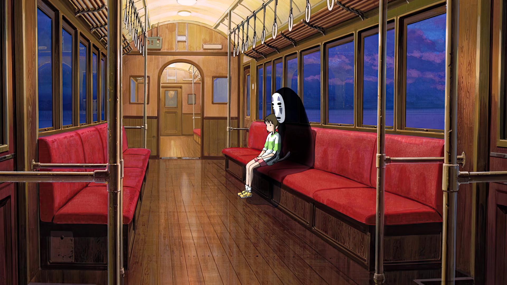

Spirited Away
Spirited Away (Japanese: 千と千尋の神隠し, Hepburn: Sen to Chihiro no Kamikakushi, lit. 'Sen and Chihiro's Spiriting Away') is a 2001 Japanese animated fantasy film written and directed by Hayao Miyazaki, animated by Studio Ghibli for Tokuma Shoten, Nippon Television Network, Dentsu, Buena Vista Home Entertainment, Tohokushinsha Film, and Mitsubishi and distributed by Toho.[7] The film features the voices of Rumi Hiiragi, Miyu Irino, Mari Natsuki, Takeshi Naito, Yasuko Sawaguchi, Tsunehiko Kamijō, Takehiko Ono, and Bunta Sugawara. Spirited Away tells the story of Chihiro Ogino (Hiiragi), a ten-year-old girl who, while moving to a new neighborhood, enters the world of Kami (spirits of Japanese Shinto folklore).[8] After her parents are turned into pigs by the witch Yubaba (Natsuki), Chihiro takes a job working in Yubaba's bathhouse to find a way to free herself and her parents and return to the human world.
